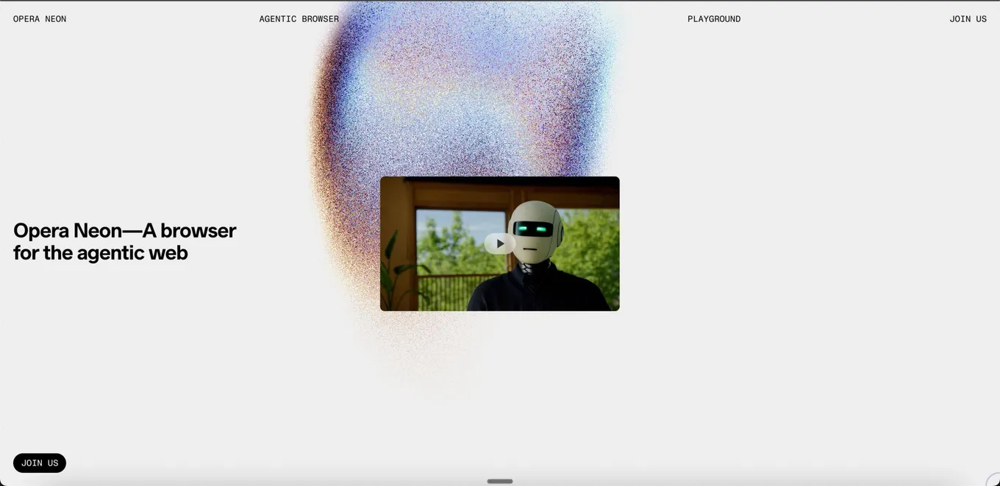

Agentic browsers reset the browser market
Originally posted on LinkedIn, August 14, 2025.
Two decades of near-total Chrome dominance ended all at once. No dramatic announcement or regulatory scandal. AI simply moved the browser, the most basic tool for digital work, in a new direction: agentic browsers.
These browsers include assistants that understand context, follow what you are doing, and respond accordingly. It is an easy experience to get hooked on. A chatbot inside the browser can search and carry out instructions directly. ChatGPT can answer a question, but an agentic browser can also show the result in the browser and work alongside you as you navigate.
Opera has announced Neon, a fully agentic AI browser that can complete complex tasks, write code, book flights, or build websites on request. It is still closed to the public, but the waitlist is open.
That opening has brought more players into the market:
- Comet by Perplexity is an AI browser with autonomous actions, content summaries, and assistance throughout a browsing session.
- Dia by The Browser Company follows Arc with a built-in Agent that communicates with the browser and completes tasks on its own. Early registration is open.
Microsoft, mocked for years over the now-dead Internet Explorer, moved quickly with an agentic version of Edge. Quietly and consistently, it has added some interesting ways to interact with AI. The execution is genuinely impressive.
You can enable Copilot Mode in Edge today through the browser settings. I tried it myself, and it is worth using just to understand the experience. I am a little jealous of people using Microsoft's 360 tools together with its browser. Microsoft has always been good at providing complementary products under one roof, and its close relationship with OpenAI only helps.
On the Chrome side, Google offers Gemini in the browser and AI Mode in the search bar. These are impressive integrations, but Chrome is still not an agentic browser. It does not act on its own. It responds when called. You can try an early version through Google Labs or Chrome settings on supported computers. It is not there yet.
The old rule still applies: when the underlying model changes, the rules reset. In the 1990s, Microsoft's Internet Explorer pushed out Netscape. Chrome then crushed Internet Explorer and held the market for a long time. Now the next browser cannot just be fast. It also needs to be smart, present, and helpful.
This shift is not limited to browsers. VSCode looked untouchable, but Cursor is now challenging it with a collaborative, intelligent development environment. In website building, tools such as Bolt and Lovable offer an AI-guided creation process that dramatically reduces errors and delays.
This is not only about technology. It changes what an interface is, what the tool we spend most of the day using looks like, and how it works with us.
We may all return to Chrome soon. But for the first time in years, the browser we open when we start working is an open choice again.
